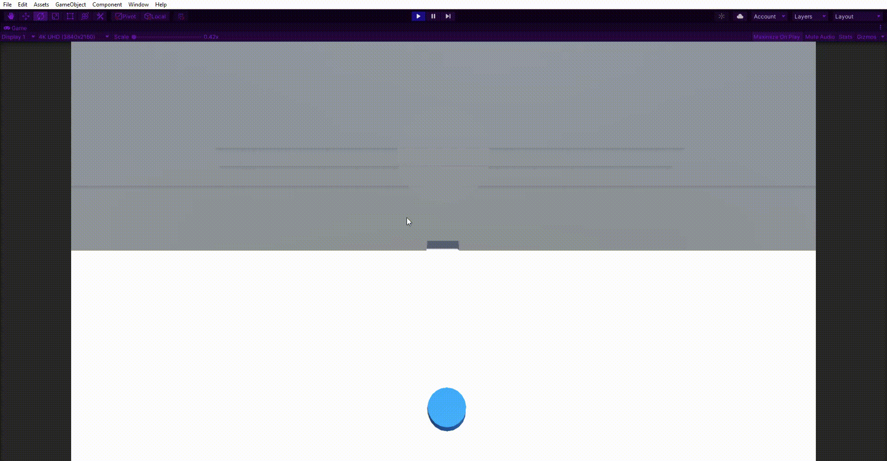

Prototype
I started the same way I start every project: Create the player character, in this case this was a simple case of creating a cylinder, reducing the height until it resembled a coin then creating a movement script. The movement script didn't need to be complicated, it only had to manage moving along the X and Z axis, there would be no need for a jump or sprint function.
void Update()
{
if (playerEnabled) {
float horrizontalMovement = Input.GetAxis("Horizontal");
float verticalMovement = Input.GetAxis("Vertical");
directionOfMovement = new Vector3(horrizontalMovement, 0, verticalMovement) * _speed * Time.deltaTime;
transform.Translate(directionOfMovement);
}
}
Once that was complete it was time to create the pickup and drop actions, but before that I needed something to interact with. I created a cube, gave it a Rigidbody then tagged it “Package”, all the pickup and drop logic would be handled by the player script so as long as an object had the “package” tag it would function the same.
For the interaction logic I renamed the player movement script to character controller and added a function that would detect an object near the player then child that GameObject to the player and move it into position. At this point I only had one object to worry about so the point was manually positioned above the player model.